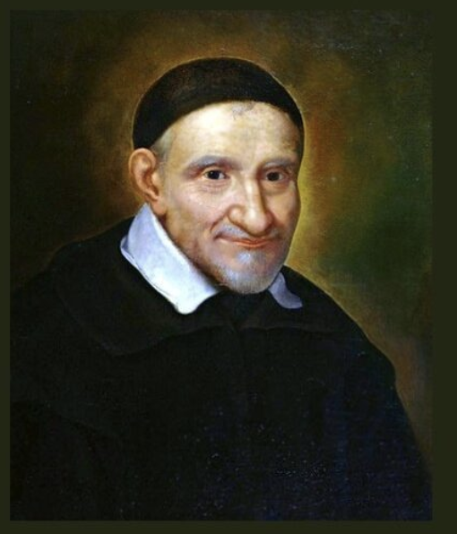

St. Vincent de Paul inspires us to be charitable individuals in service of others, especially the poor and marginalized. Here are some prayers to say to increase the virtues of charity in your life:
Prayer for Generosity
Lord, teach us to be generous;
To give without counting the cost;
To return good for evil;
To serve without expecting some reward;
To draw closer to those whom we find repulsive;
To do good to those who cannot reciprocate;
To love generously;
To work without being concerned about rest;
To be solely concerned about giving;
To give our whole self;
To give to those who need us,
Hoping to receive only You, Lord, as our reward.
Amen.
Prayer for Service to the Homeless
O God you are a God of justice, mercy, and compassion. Support us, your servants of the poor, as we endeavor to bring your love and compassion to people who are homeless and in need of your love. We pray that we will see you, our all-loving God in each homeless person we encounter and in our service for those in need. May we do all in our power to support each person reach their potential, so they experience the fullness of life. We ask this prayer through Jesus Christ Our Lord. Amen.
Prayer for Open Eyes and Hearts
Open my eyes that I may see the deepest needs of men, women and children;
Move my hands that they may feed the hungry;
Touch my heart that it may bring warmth to the despairing;
Teach me the generosity that welcomes strangers;
Let me share my possessions with people in need;
Give me the care that strengthens the sick;
Help me share in the quest to set prisoners free;
In sharing our anxieties and our love,
Our poverty and our prosperity;
We partake of your divine presence. Amen.